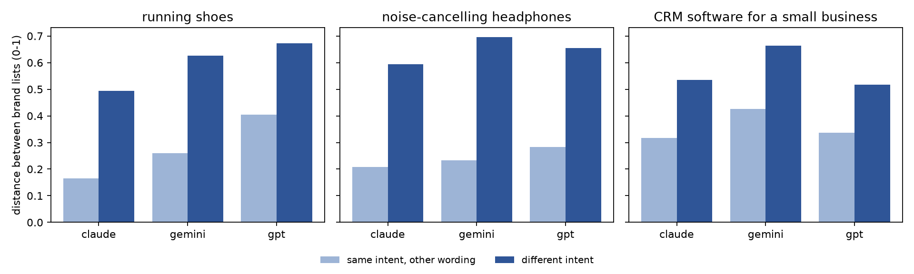

Generative AI assistants now answer product questions directly. For a brand, being named in that answer plays the role that a first-page search ranking used to play, and a growing practice of generative engine optimization (GEO) tries to influence it [1]. Yet unlike a search ranking, an assistant's recommendation can vary with the exact wording of a question and from one call to the next. Before visibility in AI answers can be measured or managed, we need to know what it responds to.
Research on recommender systems argues that modelling consumer intent makes recommendations more robust than pure black-box prediction. Wang et al. [5] infer a user's unstated intent from behaviour and use it to structure YouTube's landing-page recommendations. We study the complementary case: intent that the consumer states outright to a general-purpose assistant. Our question is whether a stated intent changes which brands are recommended, beyond the variation that rewording the same request already produces.
Contributions. (1) A full factorial audit design that separates intent effects from wording effects and run-to-run noise. (2) Evidence from 1,800 answers that stated intent is followed in all models and categories, mostly through the tail of the brand list. (3) Model-level differences in concentration and reproducibility that matter for anyone measuring brand visibility in AI answers.
Aggarwal et al. [1] formalize generative engines and show that content edits can raise a source's visibility in their answers. Kumar and Lakkaraju [4] show that product visibility in LLM recommendations can be manipulated. Allouah et al. [2] audit AI shopping agents and find choice homogeneity, with demand concentrated on a few products, and biases that vary across providers and model versions. Brand et al. [3] show that LLM answers are best treated as distributions and query each model many times. Wang et al. [5, 6] structure and diversify recommendations by consumer intent. We add an audit of how stated intent, wording and model jointly shape unmanipulated brand recommendations.
Design. We cross 3 categories (running shoes, noise-cancelling headphones, CRM software for a small business) with 5 intents (neutral, budget, premium, sustainable, novice) and 4 wordings per intent, which gives 60 prompts. Each prompt was sent 10 times to each of claude-opus-5-5, gpt-6.1-sol and gemini-3.8-flash through their APIs, with default settings, no system prompt, no web search and no memory (N = 1,800; 1–2 November 2026). The served model version was logged for every call and always matched the request. Predictions were written down before data collection, and a 36-answer pilot preceded the main run.
Coding. An LLM extractor lists every brand in an answer with a stance (recommended, mentioned, warned against) and a verbatim quote, and code rejects any quote not found in the answer. A first audit of 100 random codings found 85% correct: options listed in a table were coded as "mentioned" when the answer later named a favourite. We clarified that rule, re-coded all 1,800 answers and drew a fresh random sample. Four independent LLM reviewers judged 100/100 codings correct, and a human check of 29 of them found 29/29. Brand-name variants are merged (e.g. Soundcore → Anker).
Measures. For prompt p, let vp(b) be the share of its 10 answers that recommend brand b. The distance between two prompts is the weighted Jaccard (Ruzicka) distance
d(p,q) = 1 − Σb min(vp(b), vq(b)) / Σb max(vp(b), vq(b)).
Within each model × category, we compare the mean distance between prompts with the same intent (wording effect) to the mean distance between prompts with different intents (intent effect). The p-value comes from 2,000 random relabelings of intent across the 20 prompts. We also report run-to-run stability (Jaccard overlap of recommended sets across repeats of one prompt), concentration (the top three brands' share of all recommendations) and model agreement (Jaccard overlap of top-5 brands, averaged over the 15 category × intent cells).
Intent dominates wording. In every cell, different intents yield more distant brand profiles than different wordings (Table 1, Figure 1). The ratio ranges from 1.54 to 2.99, and every permutation test rejects at p < 0.001. The effect is smallest for CRM software, where wording alone already moves the list (within-intent distance 0.32–0.43).
| Model | Category | Same intent | Diff. intent | Ratio |
|---|---|---|---|---|
| Claude | Shoes | 0.17 | 0.49 | 2.98 |
| Claude | Headphones | 0.21 | 0.59 | 2.86 |
| Claude | CRM | 0.32 | 0.53 | 1.69 |
| Gemini | Shoes | 0.26 | 0.63 | 2.42 |
| Gemini | Headphones | 0.23 | 0.70 | 2.99 |
| Gemini | CRM | 0.43 | 0.66 | 1.56 |
| GPT | Shoes | 0.41 | 0.67 | 1.66 |
| GPT | Headphones | 0.28 | 0.66 | 2.32 |
| GPT | CRM | 0.34 | 0.52 | 1.54 |
Intent works through the tail. Category leaders persist across intents (Sony and Bose; HubSpot and Zoho; Brooks and ASICS). Intent mainly changes the brands below them. "Sustainable" brings in Fairphone (100% of headphone answers) and Veja (94% of shoe answers). "Budget" puts Anker first in headphones (100%). "Premium" raises Salesforce from 38% to 92% of CRM answers. "Novice" largely reproduces the neutral list.

Recommendations are stable but rarely identical. Repeating a prompt yields recommended sets that overlap by 0.71 (Gemini), 0.76 (GPT) and 0.80 (Claude) on average. Exactly identical sets occur in 7.5%, 20.6% and 11.8% of repeat pairs respectively, so a single query is a noisy measure of a brand's visibility.
Models differ in concentration. The top three brands receive 56–86% of GPT's recommendations across category × intent cells, against 36–76% for Gemini and 34–67% for Claude. Novice prompts are the most concentrated for every model, which echoes the choice homogeneity reported for shopping agents [2]. The models' top-5 brands overlap by 0.65 (Claude–Gemini) to 0.74 (GPT with either), so the same brand can be prominent in one assistant and marginal in another.
Stated intent is followed, but mostly at the margin: an assistant keeps a stable core of category leaders and uses intent to choose the specialists around it. For marketers, this suggests that challenger brands gain AI visibility through intent-specific positioning rather than by competing for the generic query. It also means visibility should be measured as a distribution over many wordings, repeats and models, not from a single prompt. For research on intent-aware recommendation [5, 6], general-purpose assistants offer a setting in which intent is explicit and can be manipulated directly.
Limitations. We study API models without web search or memory, which differ from the consumer apps; three categories and English prompts; and models at different price tiers, observed at a single point in time. The extraction rule was revised after the first audit, although the answers themselves were not re-collected. Formal stance coding beyond "recommended" and a test of whether intent effects survive retrieval-augmented answers are natural next steps.
Data and code: prompts, all 1,800 raw answers, codings and analysis scripts are available at github.com/imapony11-boop/ai-assistant-shopper-intent.
[1] Aggarwal, P., Murahari, V., Rajpurohit, T., Kalyan, A., Narasimhan, K., & Deshpande, A. (2024). GEO: Generative engine optimization. Proceedings of KDD 2024, 5–16.
[2] Allouah, A., Besbes, O., Figueroa, J. D., Kanoria, Y., & Kumar, A. (2025). What is your AI agent buying? Evaluation, biases, model dependence, & emerging implications for agentic e-commerce. arXiv:2508.02630.
[3] Brand, J., Israeli, A., & Ngwe, D. (2023). Using LLMs for market research. Harvard Business School Working Paper 23-062.
[4] Kumar, A., & Lakkaraju, H. (2024). Manipulating large language models to increase product visibility. arXiv:2404.07981.
[5] Wang, Y., Banerjee, C., Chucri, S., & Chen, M. (2025). Beyond black-box: Structuring landing page recommender systems using predicted intents. Stanford GSB Working Paper 4201.
[6] Wang, Y., Banerjee, C., Chucri, S., Soldo, F., Badam, S., Chi, E. H., & Chen, M. (2025). Beyond item dissimilarities: Diversifying by intent in recommender systems. Proceedings of KDD 2025.